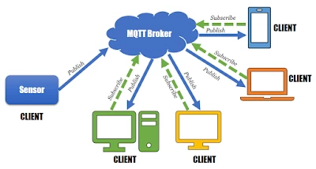
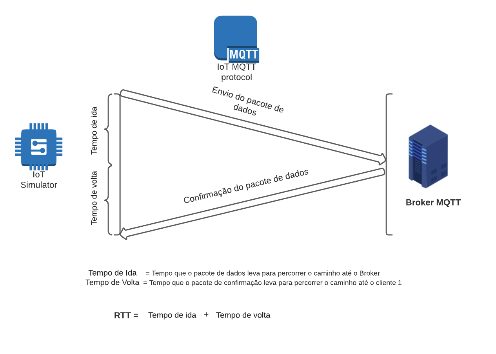

Calculo de desempenho com Locust e MQTT.
Antes de apresentar os códigos que serão utilizados para o nosso teste irei abordar alguns assuntos que acredito ser importante para um bom entendimento do que será repassado a frente.
Todos os códigos que serão explicados nessa página estão disponiveis no meu Github.
MQTT
O protocolo MQTT (Message Queuing Telemetry Transport) é um protocolo de comunicação entre máquinas (Machine to Machine – M2M) que vem se consolidando como o principal protocolo para implementações de IoT (SOUZA, 2019); (CORREA et. al, 2016)
Esse protocolo foi criado e desenvolvido pela IBM na década de 90 e tinha como objetivo original monitorar gasodutos e plataformas de petróleos. Como essas plataformas de petróleo e gasodutos geralmente se localizam em lugares remotos, o protocolo foi desenvolvido com a finalidade de operar em ambientes de largura de banda muito baixa, permitindo a troca de informações onde alguns outros protocolos não conseguiam realizar tais trocas de dados.
A arquitetura do MQTT é do tipo publicação e assinatura (publish-subscribers). Nessa arquitetura, o dispositivo é responsável por enviar (publish) as informações ao servidor, que opera como um intermediário (broker). Tendo conhecimento dos clientes que estão interessados nas informações enviadas (subscribers), o broker retransmite as informações recebidas.
A Fig. 1 exemplifica

Figura 1 – Protocolos TCP/IP e OSI Fonte: ALTUS, 2021.
O principal objetivo desse teste será calcular o tempo de ida e volta (RTT) de uma mensagem.
O que é Round Trip Time (RTT)?
O RTT é a duração em milissegundos (ms) que uma solicitação de rede leva para ir de um ponto de partida a um destino e de volta ao ponto de partida.
 Figura 2 - Round Trip Time (RTT)
Locust
 Figura 3 - Locust
Figura 3 - Locust
O Locust é uma ferramenta de teste de performance fácil de usar, programável e escalável.
O comportamento do usuário é definindo por código python, então é muito customizável. Em nosso teste iremos definir o comportamento de um dispositivo IoT publicando mensagens em um determinado tópico.
O Locust só vem com suporte embutido para HTTP/HTTPS, mas pode ser estendido para testar quase qualquer protocolo.
Para mais informações sobre o Locust, clique aqui.
Wireshark
Figura 4 - Wireshark
O Wireshark é um programa para análise de protocolo de rede em código aberto, com esse programa é possivel verificar o funcionamento de uma rede.
De maneira geral, os analisadores de pacotes são compostos por duas partes:
- O módulo de captura de pacotes (Packet Capture Library)
- O analisador de protocolos (Protocol Analyzer).
O primeiro é responsavel por capturar todos os pacotes que trafegam pela placa de rede que foi especificada, já o segundo é responsavel por interpretar os cabeçalhos e conteúdos dos pacotes.
Esse programa será fundamental para analisarmos os resultados do nosso teste. Nos permitindo capturar o tempo da saida do nosso pacote e a capturar o tempo de chegada do nosso pacote de confirmação de recebimento do broker.
Para mais informações sobre o Wireshark, clique aqui.